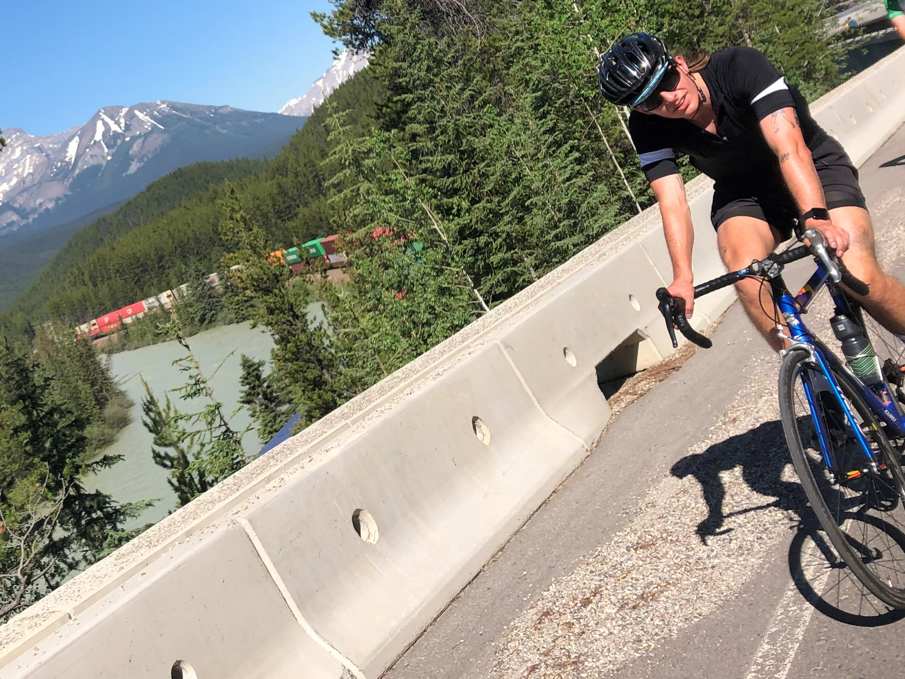

I love biking! I started biking when I was young and went on frequent rides with my family, and I guess that stuck with me because I bike any chance I get! Biking solo or in a group, in the rocky mountains or in quiet roads in the city, I'm very grateful that I get to bike as much as I do!